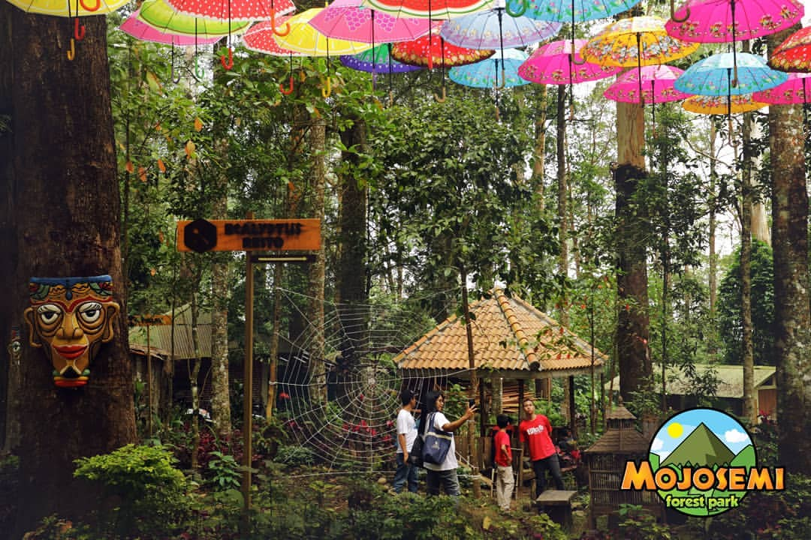
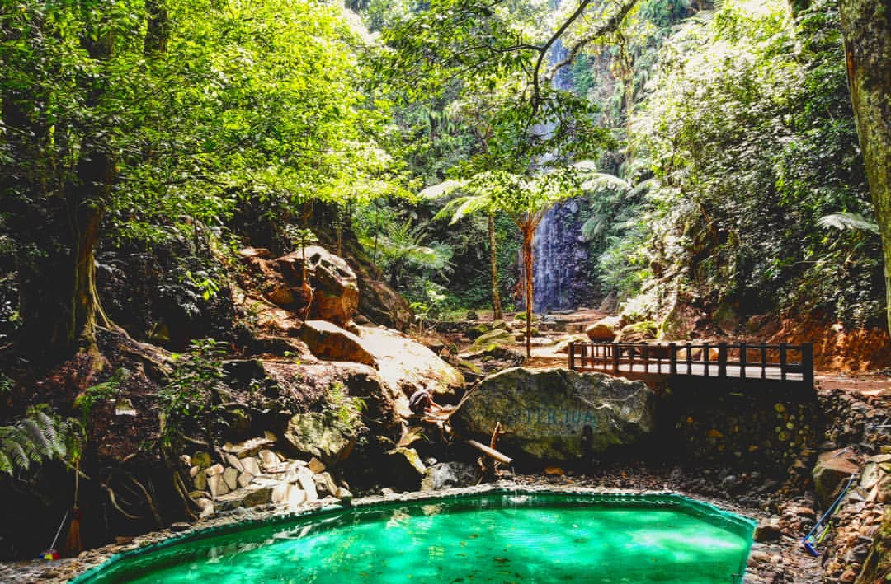

Halo sobat santuyy^^ kalian tahu Kabupaten Magetan?
Kabupaten Magetan merupakan sebuah Kabupaten yang berada di Provinsi Jawa Timur yang Berbatasan Langsung dengan Provinsi Jawa Tengah, Kabupaten ini menyimpan sejuta pesona wisata alam yang menakjubkan. Di Magetan banyak sekali macam tempat wisatanya, mulai dari Telaga, situs bersejarah, taman spot foto , sampai air terjun yang memanjakan mata.
Nah, untuk kalian yang hobi foto-foto untuk sekedar disimpan maupun untuk ngisi feeds Instagram, kali ini saya akan merekomendasikan "5 Tempat Wisata Alam Paling Hits dan Instagramable di Magetan" yang harus segera kalian explore. Cuzzzzz....
1. Telaga Sarangan
Telaga Sarangan telah menjadi ikon Kabupaten Magetan. Sebuah telaga alami yang terletak di ketinggian 1.200 meter di atas permukaan laut ini memiliki luas kira-kira 30 hektar dengan kedalaman mencapai 28 meter. Suhu udara di wisata alam Telaga Sarangan Magetan ini mencapai 20 hingga 15 derajat celcius. Sehingga bagi kalian yang terbiasa tinggal di daerah yang panas, boleh berlibur di Telaga Magetan ini untuk merasakan pengalaman berbeda.
Lokasi yang benar-benar pas untuk kunjungi saat ingin melarikan diri sejenak dari ruwetnya kehidupan nyata. Selain mendapat sensasi dingin layaknya daerah pegunungan. Di Telaga Sarangan kalian juga akan memperoleh pemandangan yang sangat menakjubkan. Apalagi saat kalian datang saat sore hari, kalian bisa merasakan suasana sunset yang apik apalagi ditemani dengan jagung bakar yang masih hangat Uhmm membayangkannya saja sudah bahagia :v
Dengan membayar tiket masuk sebesar Rp. 20.000,00/individu, kalian bisa melakukan berbagai kegiatan. Seperti :
2. Mojosemi Forest Park



Mojosemi Forest Park Merupakan Wahana Wisata Baru di Magetan tepatnya berada disebelah barat Telaga Sarangan.
Keindahan panorama alam hutan Mojosemi Forest Park yang masih terjaga menjadikan Mojosemi Forest Park memiliki banyak jenis vegetasi tumbuh, selain Pinus (Pinus sp), Juga ada Puspa (Schima Wallichii), Jamuju (Podocarpus Imbricatus), Ekaliptus (Eucalypthus sp) dan tegakan yang lain.
Mojosemi Forest Park menawarkan sebuah pengalaman yang menyenangkan dan mengesankan dengan adanya Glamour Camping, Camping Ground, Air Terjun Tirto Mojo, OutBound, Flying Fox, Skywalk, ATV, High Rope Adventure, Ekaliptus Resto & cafe, Airsoftgun Zone, Archery Zone, dan masih banyak lagi yang lain.
Mojosemi Forest Park dapat menampung lebih dari 1000 orang, dengan adanya beberapa tempat fasiltas umum lainnya, Parkir yang luas, Toilet, Mushola, Aula atau tempat pertemuan dan juga Pusat Oleh – Oleh Khas Magetan.
Akses menuju Mojosemi Forest Park sangat mudah dijangkau dengan berbagai fasilitas transportasi umum maupun pribadi, di Jalan Tembus Sarangan yaitu terletak diantara Cemoro Sewu dan Telaga Sarangan Magetan.
Untuk kalian yang ingin merasakan bermalam di hutan, namun tetap bisa tidur dengan nyaman, kalian bisa nih mengunjungi Mojosemi Forest Park. :D
lebih lengkapnya, kalian bisa mengunjungi Official Instagram Mojosemi Forest Park di @mojosemiforestpark
3. Taman Wisata Genilangit
Rekomendasi tempat wisata selanjutnya adalah Taman Wisata Genilangit yang berlokasi di Desa Genilangit, Kecamatan Poncol, Magetan, Jawa Timur. Tempat wisata ini menawarkan spot foto instagramable yang kekinian. Salah satu spot foto favorit pengunjung adalah spot foto ala ala Jepang seperti gambar diatas.
Berada di kaki gunung Lawu bikin Taman Wisata Genilangit punya pemandangan alam yang memukau. Suasana alamnya pun sejuk dan cocok buat refreshing di akhir pekan.
Nggak cuma spot selfie, ada juga spot untuk santai, gazebo, dan fasilitas pendukung lainnya seperti masjid dan cafe/warung. Ada juga spot untuk outbound dan tempat untuk berkemah.
Semua fasilitas tersebut bisa kalian dapatkan dengan harga Rp 10.0000,00 saja lo. Berminat kesana?
Oh iya, saat upload foto di Instagram jangan lupa tag @tamanwisatagenilangit agar bisa direpost. Lumayan, bisa promote akun instagram kalian nih :v
4. Kebun Refugia Magetan
Yang terakhir ini, tempat wisata yang baru saja resmi dibuka pada Oktober 2019. Wisata baru di Magetan ini memang instagramable banget. Dengan adanya hambaran bunga warna-warni apalagi dengan tata ruang yang keren, salah satunya bentuk kupu-kupu di tengah taman, berswafoto disini bisa menghasilkan foto yang instagramable untuk mengisi feeds mu loh.
Selain itu view di sebelah barat terdapat kemegahan Gunung Lawu yang bisa kalian jadikan sebagai background foto.
Berada di tepi Jalan Raya Sarangan, menjadikan taman ini sangat mudah dijangkau. Lokasi tepatnya yaitu di depan Pasar Sayur Plaosan, Kecamatan Plaosan, Magetan. Untuk harga tiket masuknya yaitu sebesar Rp 10.000,00/orang.
Kalian bisa mengunjungi Instagram Kebun Refugia Magetan di @kebunrefugiamagetan.
Nah itu tadi, rekomendasi tempat wisata alam di Magetan yang instagramable yang harus kalian coba kunjungi. Sampai jumpa dikesempatan selanjutnya. Salam Sobat Santuy ♥